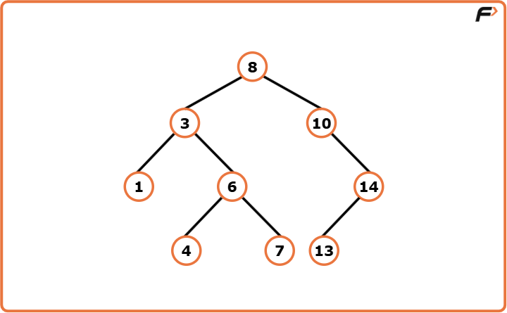
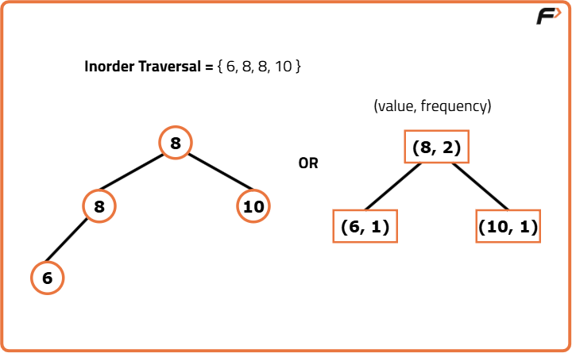

Introduction to Binary Search Trees
Introduction
Binary Search Trees, popularly known as BST, are the category of Binary Trees used to optimize the operation of searching an element among the Tree Nodes in a Binary Tree.
Let’s understand the dynamics of a Binary Search Tree using an illustration below:

As we can visualize from the above Tree, the right subtree has all the elements greater than the root element and the left subtree has all the elements lesser than the root element. A point to note here is that every subtree is itself a Binary Search Tree as it contains a subtree whose root node is lesser than the value of the current node and another subtree whose root node is greater than the value of the current node.
For every given node in a Binary Search Tree if a left or a right child exists then:
Left Child < Node < Right Child
Now, for the general implementation of Binary Search Trees, duplicate node values are not allowed. However, in some exceptional cases of Binary Search Tree implementation, we can represent a Binary Search Tree with duplicate node values in the following ways:

Need for Binary Search Tree
After understanding how a Binary Search Tree is represented, let us now understand why is there a need to use a Binary Search Tree instead of a simple Binary Tree.
So, generally in a BST, the maximum height in almost all cases is kept in order of log(2N) where N = No. of nodes which is in contrast to the plain Binary Tree whose maximum height can reach the order of N when the tree is skewed.
This particularly makes the time of searching for a given node in a Binary Search Tree a lot less than searching in a simple Binary Tree.
For example, if we have to search for an element, we can directly compare it to the root node value of the BST, if the value matches then we have found the element, if say the value is greater than the root node, we say that we now move on to searching that element in the right subtree because the right subtree has all the node values greater than the root value. The search process is terminated for the left subtree as it would only search for those nodes which have values lesser than the root.
Note that, this is very similar to the Binary Search operation which we perform in Arrays to optimize the time taken to search for an element using Linear Search. Hence this category of trees is named Binary Search Trees.